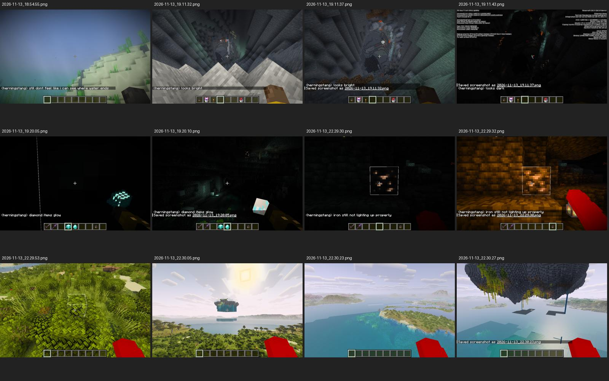
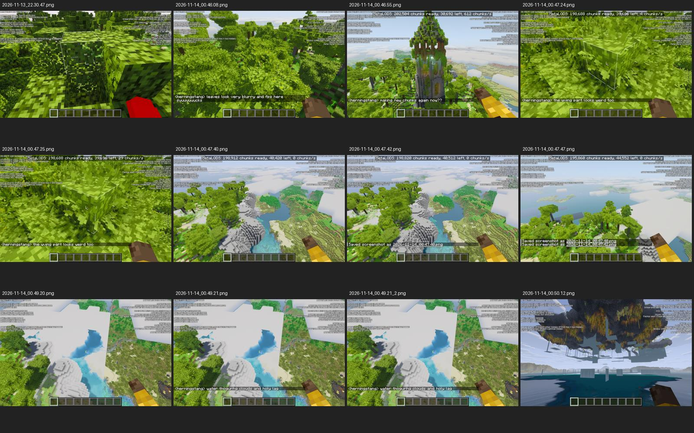
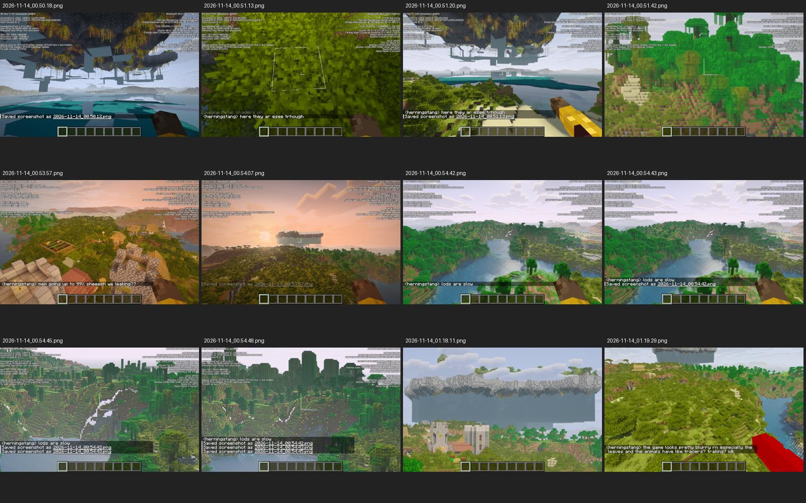
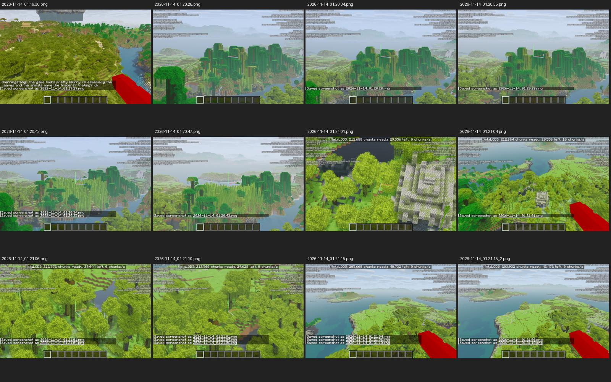
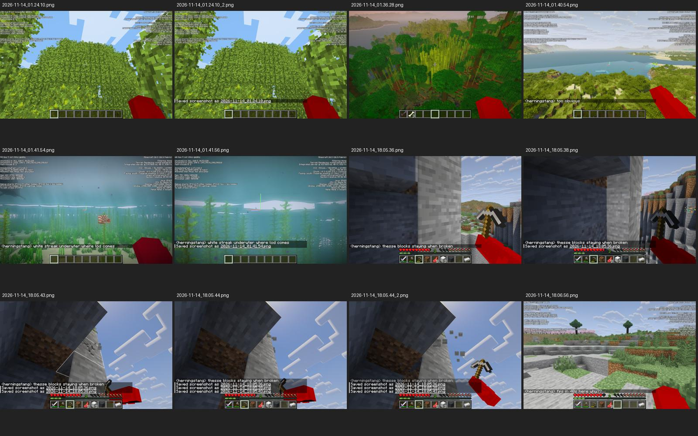
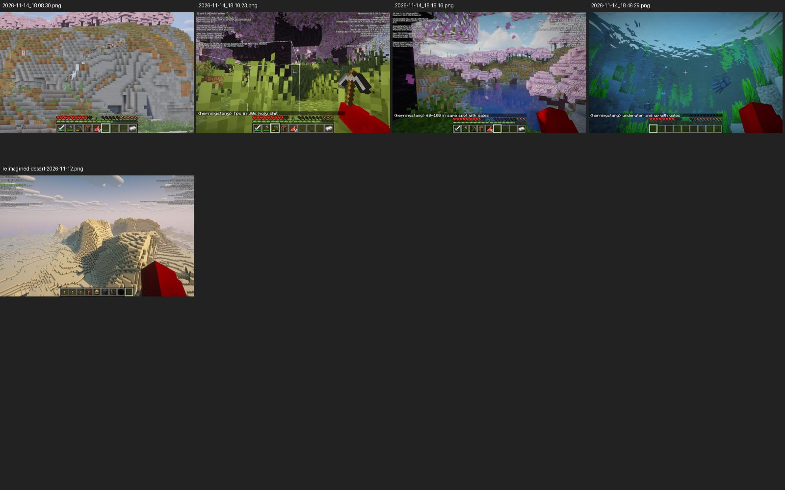

Labeled inspection contact sheets. See findings.md and inventory.md for classifications and original hashes. The final sheet includes reference material, not only Imagine Metal screenshots.





